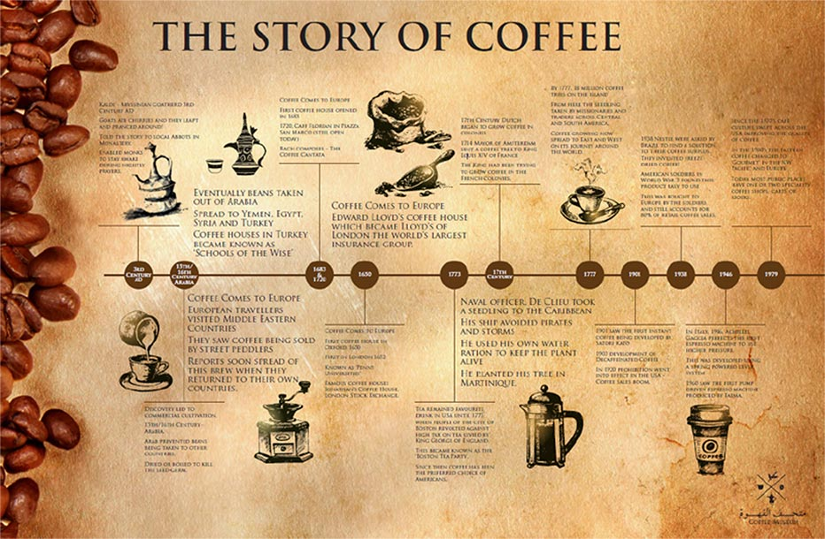
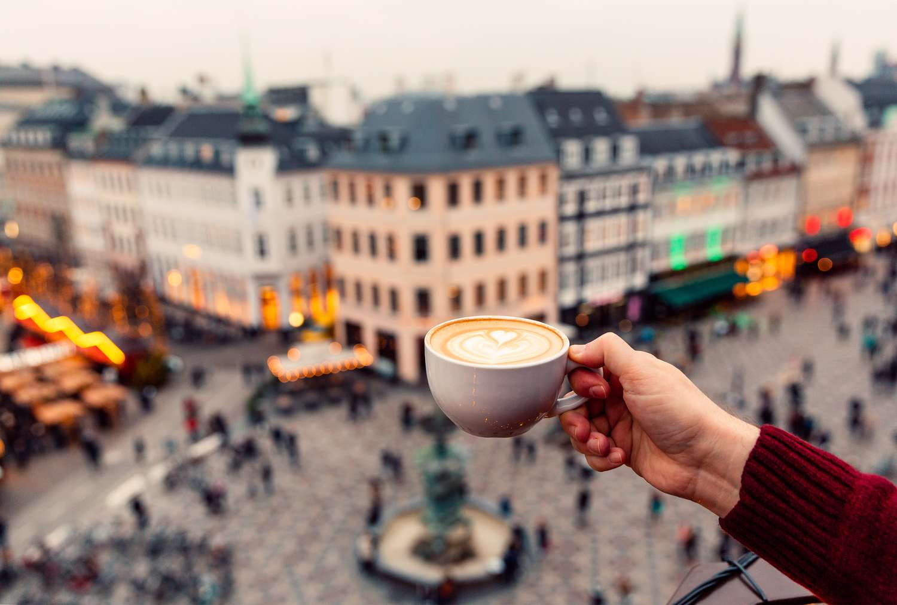
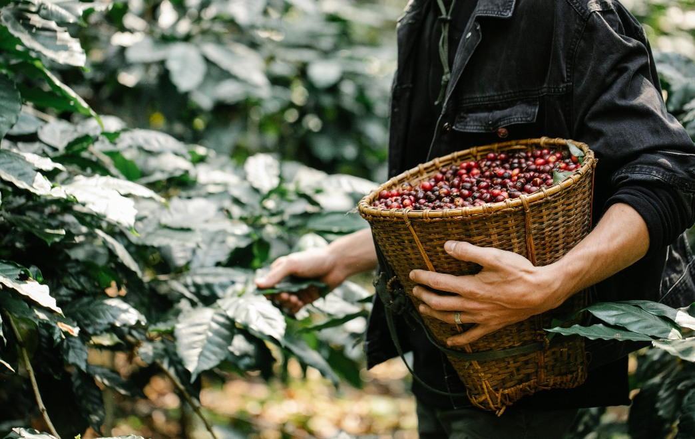
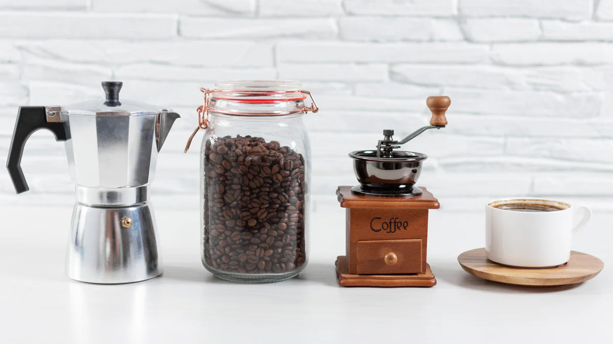

Más allá de sus famosos monumentos, París es un paraíso para los aficionados al café. Un lugar recomendado es el Café Strada, cerca del Centro Pompidou, ideal para esos momentos de tranquilidad. Otra joya es el icónico Café de Flore, donde cada sorbo te conecta con la rica historia cultural de la ciudad.

Tras la Pista del Origen del Café
La leyenda sitúa el descubrimiento del café en Etiopía, gracias a un pastor llamado Kaldi. Desde África, su cultivo y consumo se extendieron a la península arábiga durante el siglo XV, marcando el nacimiento de las primeras casas de café. Su llegada a Europa en el siglo XVII y posteriormente a América lo consolidó como una de las bebidas más populares del planeta.

Descubriendo las Metrópolis Mundiales del Café
Varias ciudades alrededor del mundo son reconocidas por su profunda cultura cafetera. Melbourne, en Australia, es considerada la capital del café de especialidad a nivel global. Las históricas cafeterías de Viena, en Austria, han sido reconocidas por la UNESCO como Patrimonio Cultural. En Roma, disfrutar de un espresso es una tradición social esencial. Cada ciudad ofrece una experiencia única en el mundo del café.

Colombia y Bolivia: El Alma Cafetera de Latinoamérica
Latinoamérica juega un papel crucial en la producción mundial de café. Colombia es famosa por su "Eje Cafetero", un destino imperdible para explorar haciendas y degustar cafés suaves y equilibrados. Bolivia, en la región de los Yungas, ofrece un café de altura con cualidades organolépticas excepcionales, una valiosa contribución al mercado de especialidad.

Prepara tu Propia Taza Perfecta: Métodos Caseros
Disfrutar de un café de calidad superior no es exclusivo de los profesionales. Métodos de extracción para el hogar, como la Prensa Francesa, permiten obtener una bebida con gran cuerpo y sabor. La tradicional cafetera Moka produce un café concentrado, similar al espresso. Para los que buscan un control total, el método Chemex facilita la experimentación para lograr una taza de pureza aromática incomparable.